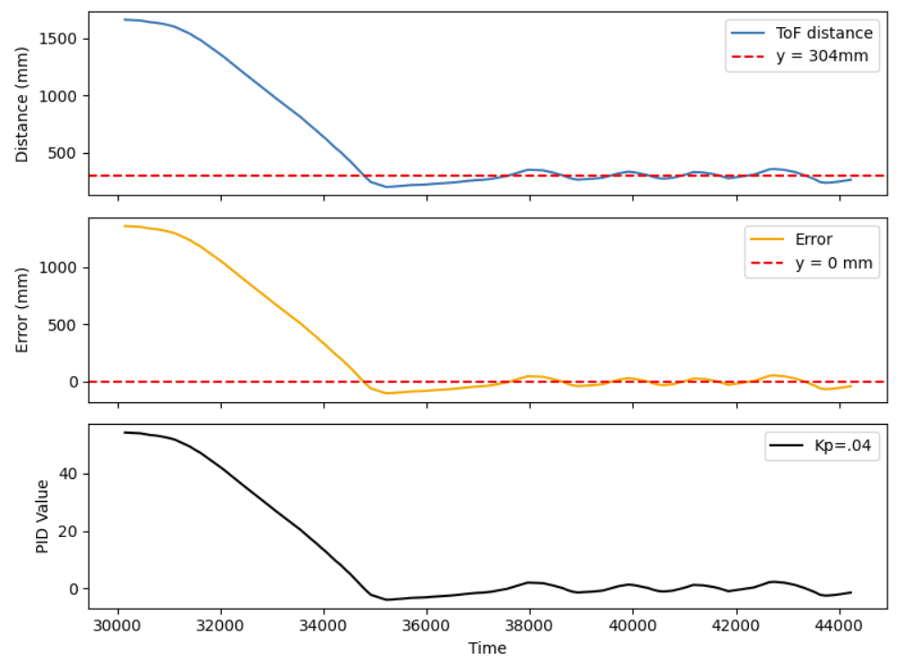

Lab 5 : Linear PID control and Linear interpolation
Before the Prelab:
Before starting the prelab, I had to separate my code into different C++ header files. Like Stephan, I was getting tired of constantly
scrolling and keeping track of all my initializations at the beginning of my code.
Managing everything in one place was becoming overwhelming. So, I decided to separate my code into different files to keep everything organized.
This allowed me to keep everything structured and made it easier for me to navigate.
I created header files for ble.hpp, imu.hpp, tof.hpp, motors.hpp, cmd_types.h. For this lab, I created another header called PID.hpp.
Finally, I modified ble.arduino.ino to move the initializations of BLE and TOF into the setup function for better organization.
Prelab
Now that I had a better structure of my code, I was ready to start the prelab.Firstly, I created new commands specifically, I created start_PID, stop_PID, SEND_PID_DATA.
For start_PID:
I created a new command called start_PID which is used to start the PID controller.
In this command, I set the run_PID_CASE to 1 which is used to start the PID controller.
I also would set the desired speed, desired distance, kp, ki, kd to the values that I want to use for the PID controller.
Sending the command from Jupyter notebook:

The case corresponding to the command:
For stop_PID:
Sending the command from Jupyter notebook:

The case corresponding to the command:

When the command from Jupyter is sent to the robot, the robot will stop the PID controller given that run_PID_CASE will now be 0 (no longer true so loop will not run).
For SEND_PID_DATA:
Sending the command from Jupyter notebook:
The case corresponding to the command:
When the command from Jupyter is sent to the robot, the robot will send the PID data back to Jupyter notebook. I included the snippet on how the data is being processed as shown above.
LAB: PID control
Since I am a level 5000 student, I could choose between PI or PID. I choose to go with PID as I wanted to be able to control the car more accurately.
The PID equation is shown below:
The final code that I used throughout the lab is shown below:
When the command from Jupyter is sent to the robot, the robot will start the PID controller given that run_PID_CASE will now be 1
When run_PID_CASE is 1 it will start the PID which is called in the void loop. Code snippet below:
The forward and backward functions are called in the PID_start function, the corresponding code snippet is shown below:

Implementing Kp
The proportional gain (Kp) is the difference between the setpoint and the TOF reading.The setpoint that was used was 304mm (which is about 1ft away from the wall).I set the ki and kd to 0 in the start_PID command for now as I wanted to see how the robot would behave with just the proportional gain.
I tested kp at kp = .03, .04, and .05
I have included the plots and videos for each of the kp values below.
Plots for kp=.03
Video for kp=.03
Plots for kp=.04

Video for kp=.04
Plots for kp=.05
Video for kp=.05
For the plots and videos above, I calibrated wheels in order for the robot to move straight.
I included a video of the robot with PID linear control with just the proportional gain without any calibration as shown below:
As you can see, the robot is not able to move straight. This is because the wheels are not calibrated.
Also, I tried implementing a higher value for kp = .06 but the robot would hit the wall and flip over.
After analyzing the plots and videos, I decided to go with kp = .05 as it was the most stable and there was much less oscillations and was faster compared to kp=.03 and .03
Implementing Ki
The integral gain (Ki) is the sum of the error over time. This is used to eliminate the steady-state error.
In the plots